Compounding Professor is based on the following formula for calculating the return for a compounding strategy, where "A" is the final value, "P" is the original principal, "r" is the annual percentage rate, "n" is the compounding frequency, and "t" is the duation of the investment:
Further reading on the compuation of compound interest is available here.
Compound Professor starts by computing the return with no compounds, then performs the calculation with one compound, then two, and so forth, until a given number of compounds produces a lower total return that the number before it. It is at that point that the total costs involved in any additional compounding exceed the marginal gain from additional compounds.
For those interested in seeing "how the sausage is made," the result of each scenario evaluated by Compound Professor is logged to the browser's console. Users will often see that the first few compounds produce significant increases in returns, followed by steadily decreasing marginal gains until the ideal compounding frequency is reached.
Currently, Compound Professor's testing maxes out at 10,000 compounds. If you get that result, please be advised that it is likely not valid.
This iteration of Compound Professor is unit/currency agnostic; however, it is important that princpal and costs per compound be measured in the same unit. For example, if your principal is 100 ETH, your costs per compound must be in ETH as well, e.g., 0.001 ETH. In the case of multi-asset principal, yield, and/or costs, you can convert everything to a common base such as USD or BTC based on its market value at the time or anticipated future market value. It is important to keep in mind that any calculations based on such conversions will be subject to change based on market conditions. Calculations that do not require any such conversions, however, such as calculating ideal compounding intervals for delegating or single-asset staking should remain valid assuming the APR remains the same.
A brief description of the input and output fields:
Optimal Compounding Interval 🤑: How many times per year you should harvest and compound the yield from your investment. It is calculated by Compounding Professor based on the data that you input.
APY (Annual Percentage Yield) 👍: The annual return that you can expect to receive if Compound Professor's optimized compounding schedule is followed. It is calculated by Compounding Professor based on the data that you provide. The difference between the optimized APY and the APR that you input represents the potential yield increase available by following Compound Professor's suggested compounding schedule.
Current Principal 💰: The amount of money, coins, tokens, etc. that you start out with. The unit (e.g., $USD vs. BTC vs. ETH ...) is not important, but it must be the same unit as your cost per compound.
Current APR 💵: The annual percentage rate of return that you expect on your investment without compounding. It should be entered as a percentage and not converted to a decimal. For example, 10.5% would be entered as 10.5, not 0.105.
Timeframe 📅: This the amount of time that you intend to leave your principal invested in the strategy that Compounding Professor is analyzing. It should be entered in years, even if the expeced duration is less than one year. For example, an anticipated duration of three months should be entered as 0.25 years.
Cost Per Compound 👎: The costs incurred in completing a compounding transaction, e.g., the gas fees to harvest and reinvest a staking or LP reward. The unit (e.g., $USD vs. BTC vs. ETH ...) is not important, but it must be the same unit as your principal.
Optimal Compounding Interval:
Optimized APY:
Current Principal:
Current APR(%):
Timeframe (years):
Cost per compound: